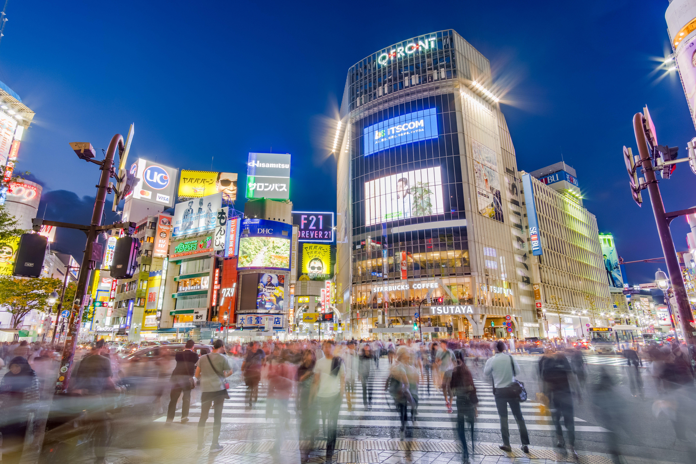
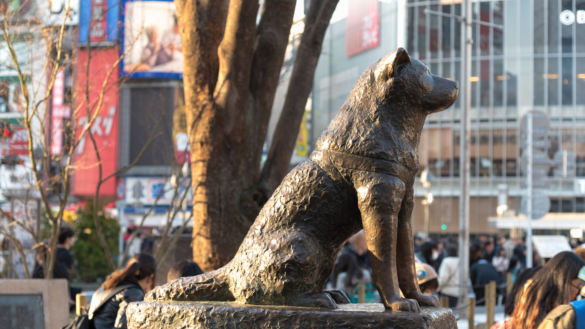
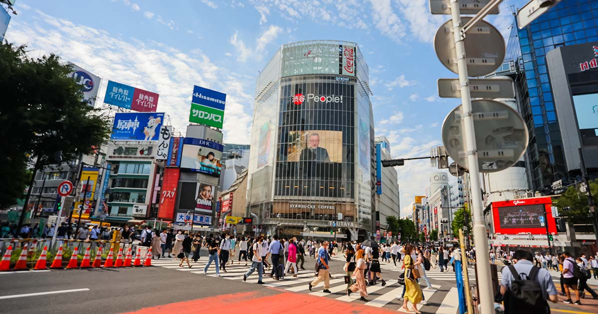
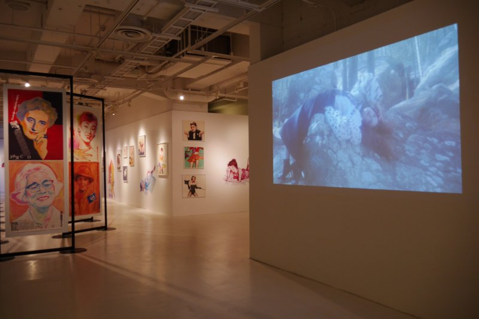
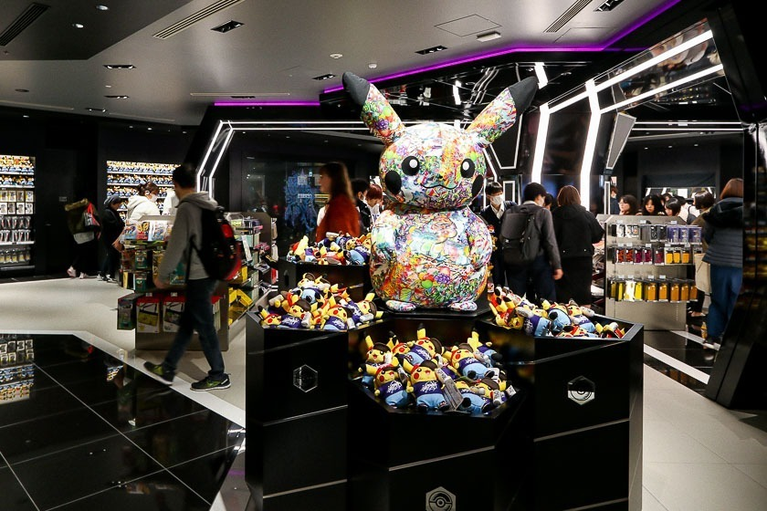

"In the heart of Tokyo, Shibuya pulses with a unique energy, blending ancient elegance with the relentless rhythm of urban life."
Shibuya
Shibuya (渋谷), situated among Tokyo's 23 city wards, extends beyond its administrative designation to encompass a dynamic realm of commerce and entertainment that orbits the bustling Shibuya Station. Far more than a mere geographical delineation, Shibuya has earned its reputation as one of Tokyo's most vibrant and bustling districts, drawing in swarms of daily visitors with its kaleidoscope of offerings in shopping, dining, and nightlife..
At the heart of Shibuya's allure is its status as a nexus for youth fashion and cultural dynamism. The very streets of Shibuya serve as the crucible for the inception and dissemination of Japan's evolving fashion and entertainment trends. This dynamic locale resonates with the pulsating beat of contemporary trends, making it a cultural epicenter where innovation and tradition coalesce.
Beyond its commercial façade, Shibuya stands as a testament to the ceaseless motion of Tokyo's urban rhythm. The district's streets, adorned with neon lights and echoing with the chatter of locals and tourists alike, create an atmosphere that is both vibrant and electrifying. It's a place where the past meets the present, and tradition seamlessly merges with the avant-garde, offering an immersive experience that captures the essence of Tokyo's dynamic spirit. In essence, Shibuya isn't just a location; it's a living, breathing testament to Tokyo's ever-evolving cultural tapestry.
Places to Visit
Meiji Jingu Shrine (明治神宮, Meiji Jingū)
Two, large gates frame the entrance to this Shinto shrine that was dedicated to Emperor and Empress Meiji. Completed in 1920, repairs were required after the shrine was damaged during World War II.
Shibuya Crossing

The only place where 7 cross roads come together and the lights all turn red at the same time. Thousands of pedestrians then all cross at the same time.
Hachiko (忠犬ハチ公, "faithful dog Hachikō")

the Hachiko statue in Shibuya is a homage to the faithful Akita dog who waited at Shibuya Station every day for his master, even after his death. Today, it’s one of the most popular meeting places in Tokyo.
Things to do

1. No money? No problem. Go People watch at Shibuya Crossing

2. Release your artistic side and Spend the day with art at a gallery

3. Empty your wallets and shop until your drop!
Cultures
Shibuya is often referred to as the center of fashion and youth culture for several compelling reasons:
Fashion Trend
Shibuya is home to a plethora of trendy boutiques, flagship stores, and cutting-edge fashion outlets. The district is a hub for both established and emerging fashion designers, showcasing the latest and most innovative styles. The streets of Shibuya become a runway for fashion enthusiasts, and the area often sets trends that resonate not only in Tokyo but globally.
Youthful Vibe
Shibuya attracts a predominantly young demographic, including students and young professionals. The district's energy is fueled by this youthful population, contributing to a vibrant and dynamic atmosphere. The youthful vibe is reflected in the fashion choices, music scene, and overall cultural expressions that permeate Shibuya.
Cultural Hub
Shibuya is not just a shopping district; it's also a cultural hub. It houses theaters, art galleries, and performance spaces that cater to the interests of the young and creative. This blend of cultural offerings further enhances Shibuya's status as a focal point for youth culture.
Website Made by
Robert Joseph M. Eusebio
Web Designer and Developer
Jonie Lee Catindig
Content Researcher and Manager
Shibuya
What's Ahead
We've prepared a brief promotional video highlighting the upcoming attractions in Shibuya. We invite you to explore this dynamic city, aglow with vibrant lights. We trust you'll find the website's contents enjoyable, and please feel free to reach out if you have any additional inquiries about the city.